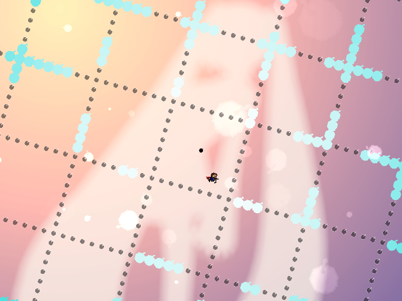
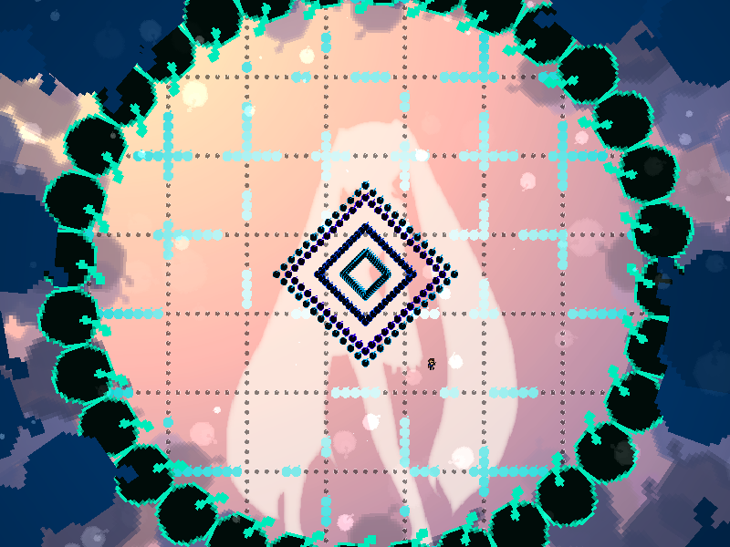
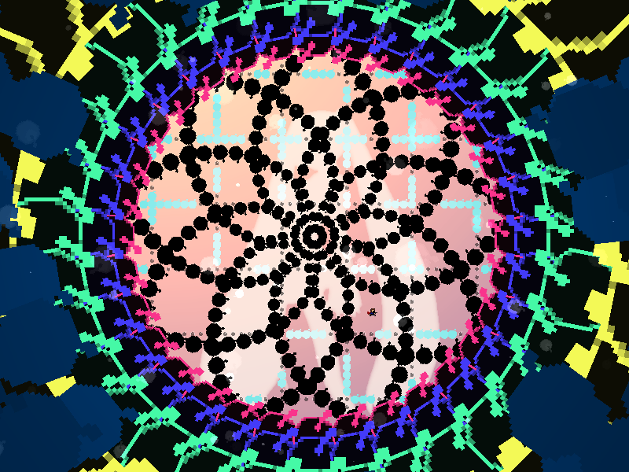

chapter8 - section7

| creator | segment | label | jump |
|---|---|---|---|
| NN | 1:51.50~1:53.50 | Q+P*A | infinite |
角度のみが一定の条件のもとランダムな弾幕です。
1:51.10以降の格子状弾幕の状態（fig.8-7.1.a, fig.8-7.1.b）によって、1:52.60において画面上に現れる螺旋状弾幕（fig.8-7.2）の角度を予測することができます。
8-7以降存在している格子状弾幕に関して、螺旋状弾幕が通過する軌道上に存在している部分を構成する弾の当たり判定が1:51.10の時点でなくなり、また色と大きさが変化します。
格子状弾幕について、変化した部分から螺旋状弾幕の軌道を予測し（fig.8-7.1.a）、残った部分を回避しつつ（fig.8-7.1.b）、螺旋状弾幕の空間となる場所へ避難する（fig.8-7.2）ということを目的としています。


